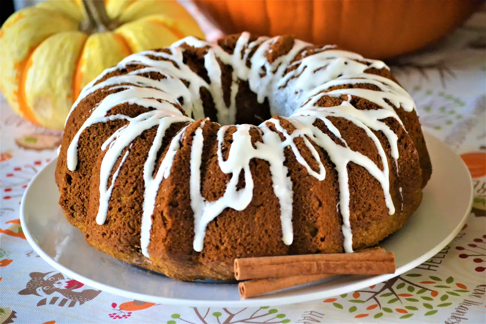

Pumpkin Cake

About this recipe:
-
Even though pumpkin is a fall favorite, this spice cake recipe using
canned pumpkin puree is good any time of the year.
what your'e going to need:
- 1 cup vegetable oil
- 3 eggs
- 1 (15 ounce) can pumpkin puree
- 1 teaspoon vanilla extract
- 2 ½ cups white sugar
- 2 ½ cups all-purpose flour
- 1 teaspoon baking soda
- 1 teaspoon ground nutmeg
- 1 teaspoon ground allspice
- 1 teaspoon ground cinnamon
- 1 teaspoon ground cloves
- ¼ teaspoon salt
- 1 cup chopped walnuts (Optional)
steps:
-
Preheat oven to 350 degrees F (175 degrees C). Grease one 10-inch bundt
or tube pan.
- Blend oil, beaten eggs, pumpkin and vanilla together.
-
Sift the flour, sugar, baking soda, ground nutmeg, ground allspice,
ground cinnamon, ground cloves and salt together. Add the flour mixture
to the pumpkin mixture and mix until just combined. If desired, stir in
some chopped nuts. Pour batter into the prepared pan.
-
Bake in preheated oven until a toothpick inserted in the middle comes
out clean, about 1 hour. Let cake cool in pan for 5 minutes, then turn
out onto a plate and sprinkle with confectioners' sugar.
now you've got a pumpkin cake :) enjoy!
go back